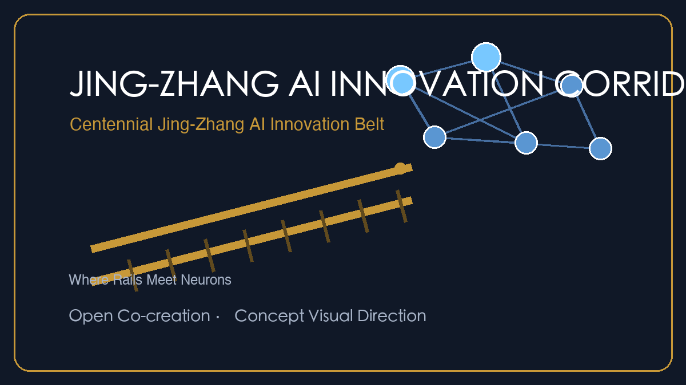
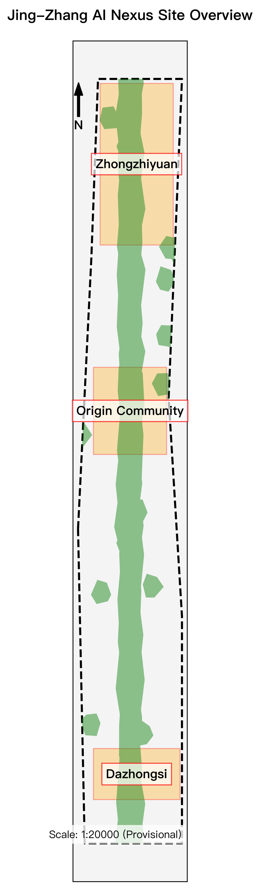

agent.1 Concept
Naming "Jing-Zhang Smart Vein · Unbounded Green" + Logo concept + three positionings / five functions / three-areas-two-wings loop.
Formal submission package interactive overview. Covers 43.6 km² research area, 11.4 km² overall design area, and 368.4 ha across 3 key detailed design zones.

AI R&D Innovation (LU-001), Blue-Green Park Network (LU-002), Tech Services (LU-003), and Community Living Support (LU-004).

Full response to agent.1 - agent.6: naming/Logo, ecosystem cases, scenario cards, pilgrimage landmarks, cultural narrative and long-term operation.
Naming "Jing-Zhang Smart Vein · Unbounded Green" + Logo concept + three positionings / five functions / three-areas-two-wings loop.
6 global benchmarks + full-stack self-innovation + land/capital/talent/compute/data/scenario mechanisms.
13 scenario cards + L1-L3 test admission + 6 personas + privacy and human-review boundaries.
Heritage park public space + 3 pilgrimage landmarks + honor display system and component library.
Three-tier heritage system + three-line narrative + spatial cultural segments + signage system + global copy.
Annual event system + open-source governance committee + scenario open operation + talent-idea-investment loop.
Core thematic systems supporting implementation.
Organizing 8 core elements plus Zhongguancun Service Wing support.
Four classes of land use ensuring mixed development.
Connecting transit and the smart rail axis for a barrier-free network.
Stitching the Qinghe river system with 31% green coverage.
Clarifying retain/renovate/demolish scales for high-quality spaces.
Six action plans with KPIs, investors and phasing.
Indexing 10 core drawings, exhibit boards and offline pages.